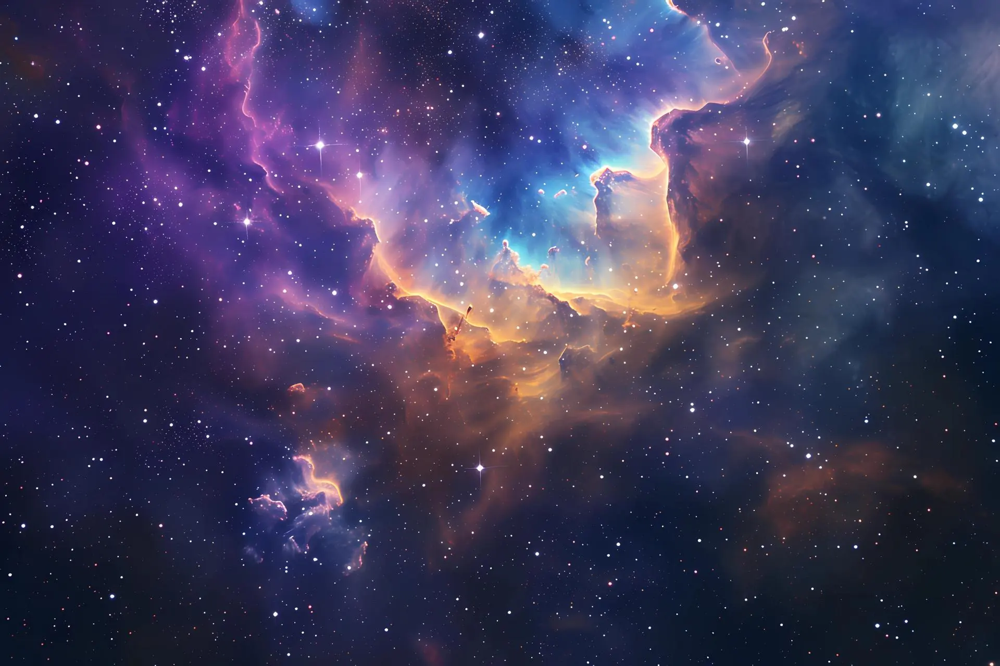
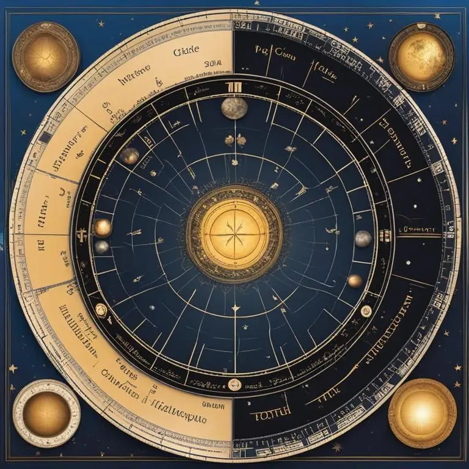
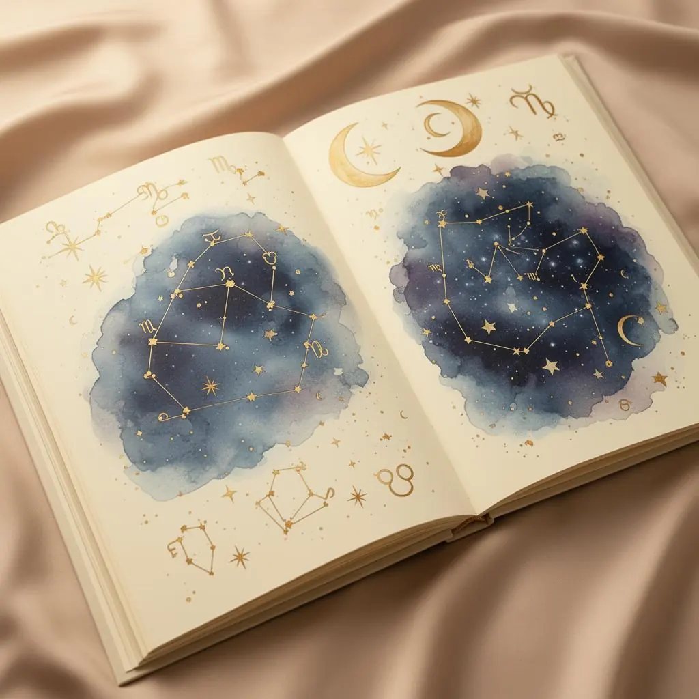
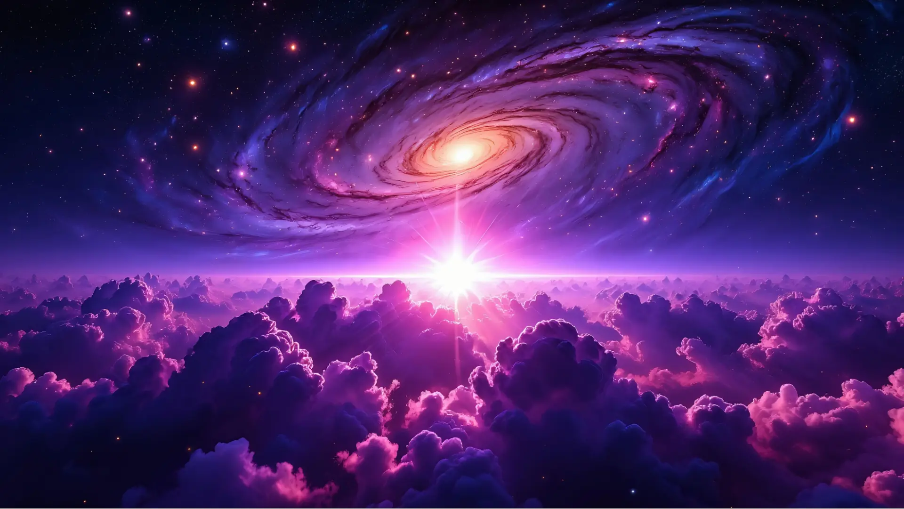
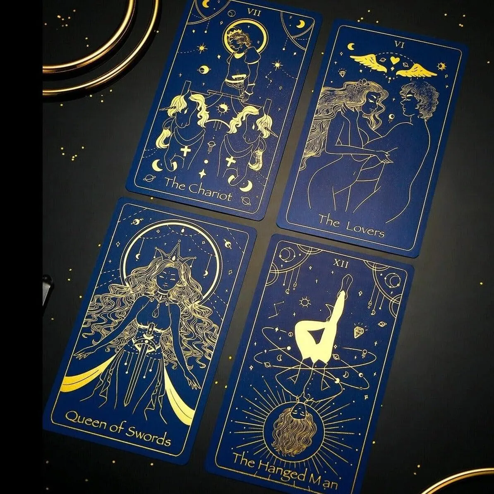

Las fotos que eligió la dueña son azul noche, índigo y violeta con dorado y bronce, más algún pergamino cálido. El sitio hoy usa verde salvia y miel (la paleta «Brote»): el verde no aparece en ninguna imagen y es lo que hace que el conjunto no termine de cerrar. Cada propuesta de abajo está armada con los colores medidos en las fotos y probada sobre una maqueta del sitio con esas mismas imágenes.
La paleta que usa hoy el sitio, para comparar. La portada abre con el cielo, pero al bajar todo vuelve al verde y a la miel, y las fotos azules quedan como recortes que no pertenecen.

Escuela onlineAstrología, tarot, constelaciones familiares, magia y gemoterapia.
Carta natal, arquetipos y ciclos planetarios para explorar tus procesos.
Descubrí nuestra propuesta
#FCFBF8#1F2E24#E6A93A#EEF3EC#0E1430#D9B45ASe saca el verde y todo el sitio pasa a azul noche: los títulos, el texto y el pie toman el tono del cielo de las fotos, y el oro hace de botón. El fondo claro se mantiene, así la lectura larga (cursos, Diario) sigue siendo cómoda. Es el cambio más simple y el que más unifica el sitio.
Astrología, tarot, constelaciones familiares, magia y gemoterapia.
Carta natal, arquetipos y ciclos planetarios para explorar tus procesos.
Descubrí nuestra propuesta#F7F5F0#141A38#262B45#D9B45A#ECEBF3#7A5A12Toma el lado cálido de las imágenes (los libros, el escritorio con cartas y minerales): fondo pergamino, texto sepia, títulos azul noche y botones de bronce. Se siente más artesanal y de «escuela de oficio»; pierde un poco de limpieza en las pantallas de panel y formularios.
Astrología, tarot, constelaciones familiares, magia y gemoterapia.
Carta natal, arquetipos y ciclos planetarios para explorar tus procesos.
Descubrí nuestra propuesta
#F5EFE4#1F2547#2E2723#C99545#EADFCC#81551CSale de la galaxia violeta del hero de Tarot: botones violeta con texto blanco, superficies lavanda y el oro solo como acento sobre lo oscuro. Es la más «mística» y la que más se aleja de lo actual; el violeta es un color muy usado en sitios de tarot y astrología, así que distingue menos.

Escuela onlineAstrología, tarot, constelaciones familiares, magia y gemoterapia.
Carta natal, arquetipos y ciclos planetarios para explorar tus procesos.
Descubrí nuestra propuesta
#F8F6FC#1A1236#2A2142#5B3FA0#EEE9F7#E0B656Elegí la que más te guste, o una mezcla (por ejemplo A en todo el sitio con el pergamino de B en el Diario). Con tu elección la aplicamos en todas las pantallas, en celular y en computadora. En las tres, el texto se lee bien sobre su fondo: todos los pares superan el contraste mínimo recomendado para lectura (4.5 : 1).